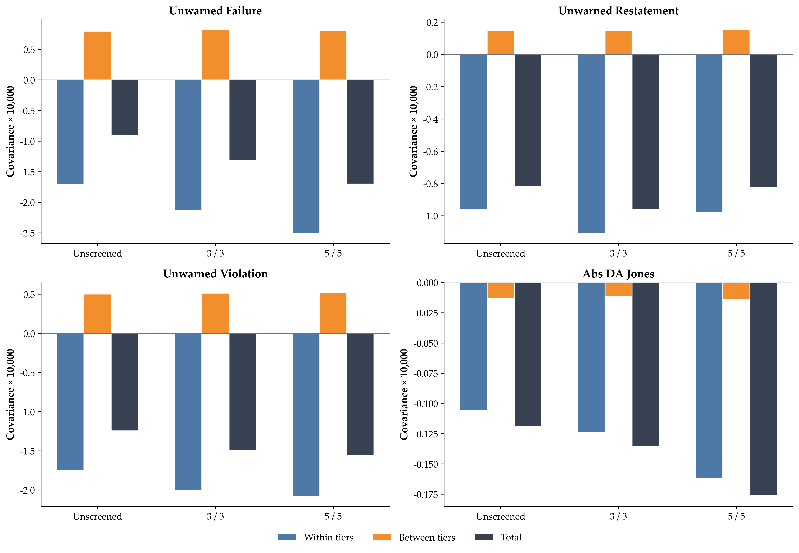
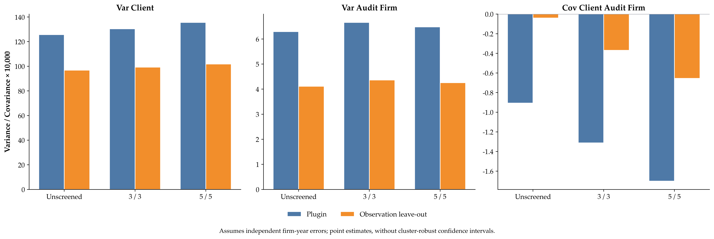
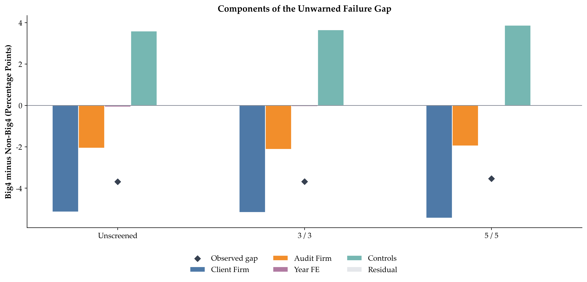
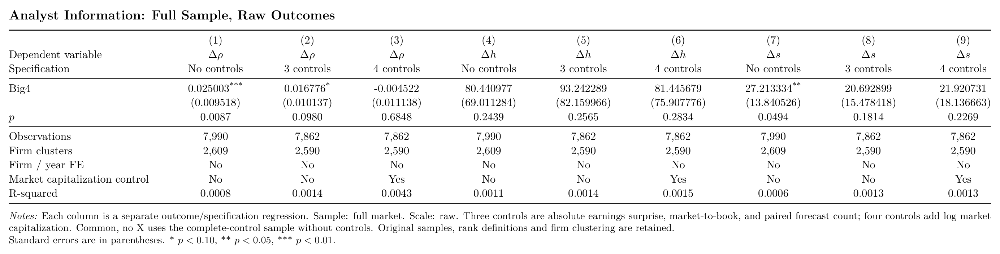

双周备忘录
本轮工作总览与主要修改
本轮围绕“四大客户的财报质量、市场认可及价格溢价分别来自审计服务、认证还是客户选择”整理已有证据，并补充数据与识别核查。最重要的修改是回补公告时点的实际EPS：对可核实记录，将可能已被重述或违规披露后更正的数据库值恢复为首次年报公告时市场看到的数值，即使那个首次披露的数字后来被认定有误，也使用当时尚未更正的版本计算surprise；已对3,353个公司年应用核实结果，其中1,751个EPS改变、180天消息分组改变136个，并完成受影响市场分析的重跑，未核实记录仍保留原值，股本及控制变量的历史版本尚未恢复。市场端补齐了2012前后分组、共同模型与滚动图，核对了未调整价格与含分红收益的区别，并完成同样本控制变量对照；当前正文采用无额外控制的事件研究，ERC保留原有控制规格。最新长窗工作另补四组平均CAR及缺日核查，取消因窗口缺日删除整份公告的绘图准入规则，但未知收益缺口仍留缺失，非平衡样本绘图已完成，原CAR主回归尚未重估。分析师主报告已将共同信息检验改为公告前后各180天的同券商配对，重做人数项与窗口比较；供应链和分所扩张已在统一控制与行业×年份效应下完成两种IV方法的28套规格、84个二阶段系数，保留弱工具和估计方法间差异；客户—事务所AKM统一了样本、事务所身份及失败指标口径，新增组内／组间分解、四大差距、KSS和未来配置诊断，并完成Stata—Python核对，客户聚类稳健KSS推断仍待完成；动态风险GFE与静态二元混合已执行，并保留日期覆盖与边界识别限制。此外，客户长期发展已新增市销率、市盈率估计，按各指标自身有效样本判断，未得到估值倍数普遍上升的证据，这部分尚未完整接入主报告。整体上，分组质量趋势、重述幅度及消息换组、市场反应、说明会案例、IV与sorting已形成相互链接的工作框架，下一步集中处理短长窗的共同样本与累计口径、扩张的审计结果路径，以及风险可知时点与改聘决策的对应关系。
2026-10-26 会议提纲：会议任务
本次按上次会议留下的九个任务逐项汇报。详细图表、口径和识别诊断已融入23号主报告；以下提纲链接直达对应正文。
1. 2012年前后的分组市场图
当前采用无额外控制的事件研究，先看差距收窄来自哪一组。 以下两图均从7年滚动共同回归中提取各审计组自身的“好消息−中性消息”公告日响应，不是只画组间差，也不是各组另做回归。Y为原始log price，样本为完整[-5,+5]的好消息与中性消息公告，−1日基期；公司×财年、事件日、实际交易日期固定效应，公司×财年聚类。


三组最早2001—2007与最晚2017—2023窗口的点估计为：四大：0.0095→0.0027；本土八大：0.0033→0.0026；Other：0.0027→0.0007。市场反应的描述性模式更接近四大响应下降较多，其他组没有普遍上升，尚不能写成其他所质量追上四大。 跨窗口客户与消息强度会变化，窗口也相互重叠；审计质量变化仍以audit outcomes等证据单独判断。
2. 短期、长期市场反应核查
无控制短窗中，2012年前四大−Other在公告日为0.005564（p=0.0067），+5日为0.009905（p=0.0277）；四大−非四大+5日为0.008210（p=0.0548）。2012年起的短窗证据较弱，早期共同模型四大−Other仍存在事前差异（p=0.0299）。
恢复原报EPS后，原有控制规格的ERC仍较高；无额外控制的长窗好消息相对中性模型中，+60日四大−非四大累计收益差为−2.03个百分点（p=0.0048）。ERC是连续盈利惊喜的斜率，长窗是累计路径差；+60日包含公告初期收益，尚不能把两者合成已识别的价格反转或信息效率机制。
ERC · 短长窗比较与事前检验 · 全部无控制结果
3. 2012前后 audit outcomes、逐年趋势
三组逐年及前后比较已完成。Fin重述三组均上升、四大上升较少；Broad中四大下降更多。原始失败记录未显示一致的其他所追赶。客户构成、监管发现与追踪期限是否解释部分差异；会计指标与收费的调整后趋势如何同市场变化对齐。


4. 其他变好还是四大变差
客观质量与市场相对响应没有给出同一个趋同模式。Fin差距扩大，Broad中四大下降更多；市场响应还取决于消息比较、客户样本与模型约束。分清哪些是事实、哪些是机制解释。先对齐三组质量、收费与市场走势，再决定2012能否发展为核心问题。
市场端沿用上文两张无控制滚动分组图，与下表的质量变化分别解释。
| 事务所组 | Fin：2001—2011 | Fin：2012—2024 | Broad：2001—2011 | Broad：2012—2024 |
|---|---|---|---|---|
| 四大 | 2.34% | 4.11% | 12.97% | 8.49% |
| 本土八大 | 5.33% | 9.57% | 15.56% | 15.16% |
| Other | 6.13% | 13.44% | 18.71% | 18.60% |
5. 重述程度、是否改变盈余惊喜
严格重述已核实部分的净利润相对调整中位数4.72%；确认104／866（12.01%）改变消息分组，其中16个直接互换超预期／不及预期。原报恢复已接入正式信号并完成市场重跑，主要结果基本不变。严格重述仍有811个公司年未恢复；已确认换组率不能代表未覆盖部分。历史股本和财务控制变量版本也尚未恢复。
| 调整量 | 严格：中位数 | 严格：P90 | 严重：中位数 | 严重：P90 |
|---|---|---|---|---|
| 净利润绝对调整（万元） | 630.68 | 13,626.75 | 767.94 | 17,141.85 |
| EPS绝对调整（元／股） | 0.0117 | 0.2061 | 0.0148 | 0.2734 |
| 净利润相对调整幅度（%） | 4.72 | 83.36 | 5.70 | 86.72 |
| 当前数据分组 → 原报分组 | 不及预期 | 中性 | 超预期 | 合计 |
|---|---|---|---|---|
| 不及预期 | 273 | 68 | 14 | 355 |
| 中性 | 8 | 149 | 5 | 162 |
| 超预期 | 2 | 7 | 93 | 102 |
| 合计 | 283 | 224 | 112 | 619 |
6. 财报公布时不知道、一周后才知道什么
CSMAR问答记录提供了具体案例：财报公布后，投资者追问现金流、应收账款及盈利增长，公司在说明会上解释其业务和结算原因。下列三个早期案例均为现有好消息组的非四大客户，说明会在年报公告后3—6个自然日举行。以现金流和应收账款问答为重点，将说明会日期对齐公告后的价格路径，比较有无说明会及问答内容的差异。
三个公告后一周内的说明会案例
| 公司—财年 | 当年审计师 | 年报公告 | 说明会 | 间隔 | 投资者疑问与公司解释 |
|---|---|---|---|---|---|
| 苏宁电器002024—2006 | 江苏天衡，Other | 2007-03-10 | 2007-03-13 | 3日 | 为什么经营现金流没有随收入增长？财务负责人解释新店投入、存货增长及支付供应商货款的资金占用。 |
| 皖通科技002331—2010 | 天健正信，本土八大 | 2011-02-22 | 2011-02-25 | 3日 | 为什么应收账款增长较快？财务总监解释收入增长，以及项目完工后尚未到期的缺陷责任期。 |
| 杭氧股份002430—2010 | 天健，本土八大 | 2011-04-13 | 2011-04-19 | 6日 | 营业收入约30亿元，销售收现约19亿元，应收仅增加不到2亿元，差额是什么？财务负责人解释部分采用银行承兑汇票结算，该部分票据业务不进入现金流量表。 |
这三个例子把“财报后市场还在了解什么”具体化了：投资者已经看到收入、利润和现金流数字，但仍在追问数字之间的关系、收款安排及增长带来的资金占用；说明会提供针对这些疑问的解释。 当前surprise分别为16.52%、11.28%和12.92%，均超过主报告的10%好消息门槛，三个事件也均有完整短窗行情。
以下为CSMAR原始问答重新排版的摘录表，保留提问与回答全文；图下注明原始Excel行号，便于回查。
查看原始问答／纪要：苏宁电器：公告后第3日，解释经营现金流与收入、利润不同步。CSMAR原始问答表摘录。

查看原始问答／纪要：皖通科技：公告后第3日，解释应收账款与项目缺陷责任期。CSMAR原始问答表摘录。

查看原始问答／纪要：杭氧股份：公告后第6日，解释收入、销售收现与银行承兑汇票的关系。CSMAR原始问答表摘录。

会议日期另见苏宁公司官网2007年报中的说明会记录、全景网皖通说明会当日报道及杭氧说明会通知记录。
补充：原始会议纪要截图——东方电气与通富微电
东方电气2010年报：公告后第1日解释应收账款。 年报于2011-03-31公告，4月1日在上海举行说明会。券商整理的纪要记录，投资者追问管理费用、所得税和应收账款；公司解释合同通常有约10%的质量保证金，期限为2年或5年，因而收入确认后仍形成应收款。第一创业2011-04-06会议纪要，第4页。
查看原始问答／纪要：东方电气：原始会议纪要第4页Q7截图，包含公司答复及券商观点。

通富微电2023年报：公告后第6日解释增收不增利。 年报公告日为2024-04-13，4月19日举行公开网上说明会。投资者问公司是否因价格竞争和议价能力不足而增收不增利；公司拆解需求、产能利用率和汇兑损失，说明汇兑损失减少归母净利润1.90亿元，并补充两家子公司的盈利表现。公司投资者关系活动记录，第6—7页。活动时间按记录首页的2024-04-19；纪要文件发布于4月24日。

说明会通常在年报后多久？
本次读取下载的三个Excel，共1,083,440条问答。按股票代码、数据所属会计年度和实际答复日期合并为活动日，再与正式年报公告日匹配；每份年报取公告当日至365个自然日内首次被数据记录的问答活动，不按问题条数重复计数。使用答复日期，是为了将提前征集问题与实际说明会交流区分开。有效样本为25,586份年报、4,794家公司，财年覆盖2005—2024。
总体中位数为公告后12个自然日，四分之一在7日内、四分之三在19日内。公告后第1—7日的占24.4%，包括公告当天则为25.7%；64.0%在两周内、87.2%在30日内。
| 样本 | 年报数 | 间隔中位数 | 第25—75百分位 | 公告后第1—7日 | 当日至第14日 | 当日至第30日 |
|---|---|---|---|---|---|---|
| 全部可匹配年报 | 25,586 | 12日 | 7—19日 | 24.4% | 64.0% | 87.2% |
| 2012年前财年 | 2,921 | 10日 | 7—16日 | 27.4% | 72.4% | 89.8% |
| 四大客户 | 1,438 | 13日 | 6—24日 | 24.1% | 55.7% | 80.6% |
| 非四大客户 | 24,148 | 12日 | 7—19日 | 24.4% | 64.4% | 87.6% |
| 非四大、好消息组 | 1,881 | 11日 | 7—17日 | 27.5% | 69.3% | 88.7% |
数据同时包含同一会计年度的多次问答活动，因此这里衡量“年报后首次被该库记录的问答活动”的间隔。2,337条缺失答复日期的问答不纳入时间统计。42,497个公司—年度—活动日中，35,758个能按代码和年度匹配年报；其中9,628个早于对应年报、36个晚于365日，另有6,739个未匹配，均保留在活动日明细中。组间数字是时间分布描述。
7. Expansion 剔除最大客户
城市四套一阶段已完成；截至2012年剔除最大客户后，TWFE为+4.10、CS-DID为+3.71个百分点。省域及邻省版本已做约化式、DID-IV和批次来源核查，邻省正向失败结果存在低基期与比较地区问题。城市版尚缺审计结果约化式和第二阶段；采用效应不解决冲击选择与排除限制。先决定城市定义是否值得继续。


8. AKM能否 accommodate sorting
AKM可以容纳客户与事务所之间的永久类型sorting。 Abowd 等 (1999年) 的模型允许客户持久失败成分\(\alpha_i\)与事务所稳定结果成分\(\psi_f\)相关，因而长期低风险客户更常选择四大与模型相容。关键限制是剩余结果冲击与整条事务所配置路径的关系，而非要求两端永久类型独立。写成
\[ \begin{aligned} Y_{it}&=X_{it}'\beta+\alpha_i+\psi_{f(i,t)}+\lambda_t+\varepsilon_{it},\\ &\text{允许 }\operatorname{Cov}(\alpha_i,\psi_{f(i,t)})\ne0,\\ \operatorname E[\varepsilon_{it}\mid \alpha_i,\boldsymbol\psi,\boldsymbol\lambda,\mathcal X_i,\mathcal F_i]&=0,\qquad \forall t. \end{aligned} \tag{1}\]
其中\(\mathcal F_i\)与\(\mathcal X_i\)是客户完整的事务所配置及控制变量路径；该条件蕴含\(\varepsilon_{it}\)与任意过去、当前或未来的配置指示变量正交。基准AKM可以允许客户内部的误差序列相关，并按客户聚类，但这些误差仍须与配置路径正交；当前逐观测KSS另需公司年误差独立。完整方程与样本定义。
我们的问题在于，已有选择分析发现上一期风险／审计意见与下一期留任、退出和改聘相关。 如果这只是客户永久风险或可观察特征的配置，AKM可以吸收；如果选所还取决于上一期未被吸收的风险冲击，则可能出现
\[ \operatorname{Cov}\!\left(\varepsilon_{i,t-1},\mathbf1\{f(i,t)=j\}\mid \alpha_i,\boldsymbol\psi,\boldsymbol\lambda,\mathcal X_i\right)\ne0, \tag{2}\]
从而违反上述严格外生性。单看观测风险与改聘相关还不足以确认违反，因而需要进一步检查剩余成分与未来配置的关系。这里有两条方向：一是 Bonhomme 等 (2019年) 的类型与动态分布框架，已有收费CDF分类与配对结果可作为描述性起点，动态版本还需规定类型条件下的Markov结构；二是 Abowd 等 (2019年) 的残差诊断及结果—流动联合潜在类型模型。本轮已做剩余结果—未来配置诊断和动态序列支持检查，本轮已实际运行动态风险GFE与独立静态二元混合。年度风险集用于条件配置，有日期的换所样本另估；完整续聘决策日和普遍恢复的财务历史原始版本仍未覆盖，不能把本轮结果称为原文完整动态BLM。
我又做了一些分析，我发现，组间配置与组内配置的方向不同。 按四大、本土八大与Other分解同一次全样本拟合，三套样本的失败指标均为正组间、负组内，且组内负项更大。因此，四大客户具有较低的持久失败成分，与总体客户—事务所插件相关为负可以同时成立。综合失败总体相关在不筛选、33、55样本中分别为−0.0322、−0.0445、−0.0574；这是新增探索性分析，Abs DA的组间方向不同，单独解释。完整分解与分梯队估计。

KSS校正后，负相关的绝对量级减小，点估计方向保持为负。 按 Kline 等 (2020年) 的逐观测leave-out方法，同时校正客户方差、事务所方差及协方差后，综合失败相关在三套样本中分别变为−0.0020、−0.0177、−0.0315。因而校正影响量级，没有改变这三套点估计的符号；不筛选样本已接近0。当前结果依赖公司年误差独立，尚无客户聚类稳健完整置信区间，符号一致不等于统计上确认了负sorting。KSS解决估计噪声，时变风险导致的内生换所沿前述两条方向另行处理。KSS完整结果。

四大观察优势同时对应客户与事务所的稳定成分。 不筛选样本中，四大相对非四大的未预警综合失败率低3.687个百分点，客户、事务所和年份成分分别贡献−5.148、−2.064和−0.074个百分点，控制变量成分贡献+3.599个百分点，抵消部分差距。各项来自同一个估计样本，体现当前加性模型中的稳定构成；将事务所成分进一步解释为因果服务作用，仍依赖前述外生性与加性条件。全部四大差距。

现有检查交代了估计支持，也提示动态选择需要继续核对。 48个基准／分梯队模型与24个未来配置模型已经Stata—Python逐行核对，网络、关键客户删除和50次重复抽样结果见26号报告。综合失败两年期不筛选样本的未来配置联合检验，六项Holm校正后\(p=0.047\)，扩至全部24项后为0.182，且未在33和55中重复出现。9,218次年度换所中5,800次有变更日期候选；需要核准具体事件与决策时已知风险，再设定动态模型。
新执行结果。 我又推进了历史分组加连续风险的动态状态模型，以及独立的两类型Bernoulli混合基准。完整模型、主要图和执行诊断已接入26号报告。不筛选、33、55的年度主样本分别为24,428、23,516、22,212个客户年；三套样本各进行500次客户整段重抽样。日期缺失使我们首先解释年度配置的条件关联，而非完整决策结构。
时间外选择没有支持增加客户组数，主规格选中一组；2—4组的分类构成和交互结果保留为探索，并列出部分四大单元的零事件。因此当前最稳妥的进展是把“何时的可见风险与选所相关”估清楚，尚不能声称稳定识别了多个永久风险类型。同风险比较中，不筛选样本四大与Other的标准化联合失败概率分别为0.99%和5.13%，只针对共同支持参考人群；服务解释还要求状态充分与当前创新条件。
静态二元混合能够改善两期结果分布拟合，但存在边界路径权重／结果概率。已交付路径权重、软后验、留任者构成和500次稳定性重抽样；局部Jacobian满秩不能把边界解升级为稳健类型识别。六类模拟专门区分纯构成、条件结果差异及私人选择，帮助限定结果能回答的问题。这两条新路线都没有自动消除未观察私人信息导致的内生性。
9. 分析师指标与人数
公式含人数项，代数拆分中显式人数项对应约17.2%的原始组间差异；已有门槛和FE比较未形成稳定四大优势。券商构成、前后均预测的选择和无限窗口间隔尚未闭合；一致性与准确性分别解释。


| Δρ的四大−非四大均值差分解 | 数值 |
|---|---|
| 原始组间差异 | 0.025003 |
| 显式1/n项对应部分 | 0.004299 |
| 其余部分 | 0.020704 |